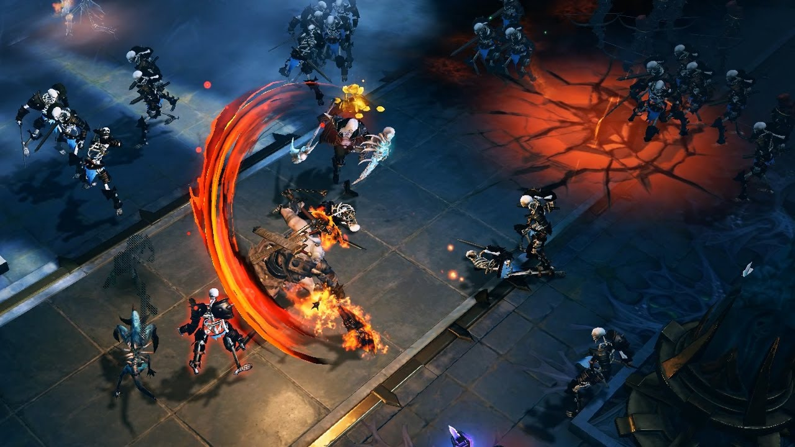
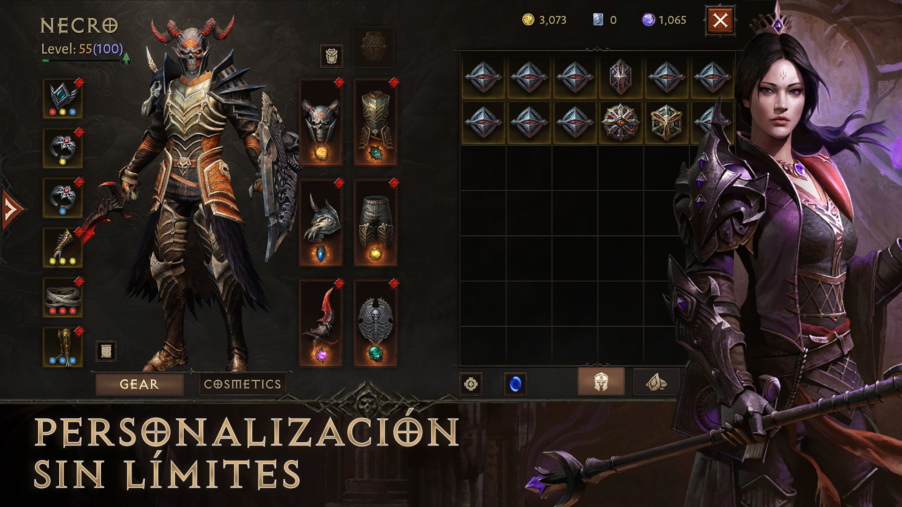
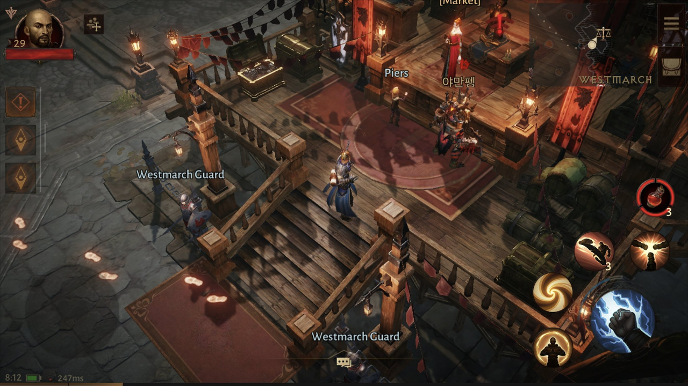
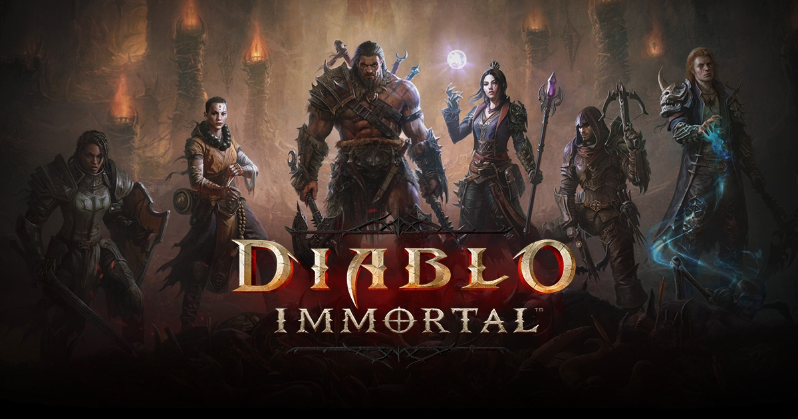

Tema
Descripción detallada sobre el tema elegido: Diablo Immortal. Exploramos sus clases, características y un análisis del videojuego.
Galería de Imágenes




Video sobre Diablo Immortal
Clases de Diablo Immortal
En Diablo Immortal, puedes elegir entre varias clases de personajes, cada una con habilidades únicas:
- Bárbaro: Especializado en combate cuerpo a cuerpo y daño masivo.
- Monje: Maestro de habilidades cuerpo a cuerpo y espirituales.
- Cazador de demonios: Experto en combate a distancia con arcos y ballestas.
- Mago: Usuario de magia poderosa con ataques a distancia.
- Necromante: Controla hordas de muertos vivientes y magia oscura.
- Cruzado: Caballero con armadura pesada y habilidades defensivas.
Encuentros y Jefes
Explora los emocionantes encuentros y desafíos que ofrece Diablo Immortal.